전자캐드기능사 (2016-01-24 기출문제)
1과목: 전기전자공학(대략구분)
1. 발진 회로 중에서 각 특성을 비교하였을 때 바르게 연결한 것은?
- RC 발진 회로는 가격이 저가이다.
- LC 발진 회로는 안정성이 양호하다.
- 수정 발진 회로는 Q값이 작다.
- 세라믹 발진 회로는 저주파 측정용 발진기 용도로 쓰인다.
(정답률: 61%)

2. 그림의 회로에서 출력전압 Vo의 크기는? (단, V는 실효값이다.)
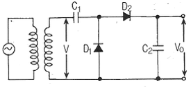
- 2V
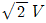
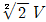
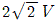
(정답률: 45%)
3. 주파수 변조 방식의 특징이 아닌 것은?
- 주파수 변별기를 이용하여 복조한다.
- 점유 주파수 대역폭이 좁다.
- S/N이 개선된다.
- 페이딩 영향이 적고 신호 방해가 적다.
(정답률: 66%)
4. 다음 중 R-S 플립플롭(flip-flop)에서 진리표가 R = 1, S = 1일 때, 출력은? (단, 클럭 펄스는 1 이다.)
- 0
- 1
- 불변
- 불능
(정답률: 66%)
5. 다음 회로는 수정 발진기의 가장 기본적인 회로이다. 발진 회로에 A에 들어갈 부품은?
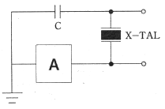
- 저항
- 코일
- TR
- 커패시터
(정답률: 70%)
6. 그림과 같은 논리회로에 입력되는 값 A, B, C에 따른 출력 Y의 값으로 옳은 것은?
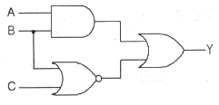
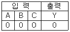
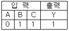
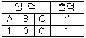
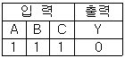
(정답률: 73%)
7. 그림과 같은 비안정 멀티바이브레이터의 반복주기 T는 몇 ms 인기? (단, C1 = C2 = 0.02㎌, RB1 = RB2 = 30kΩ이다.)
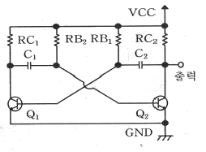
- 0.632
- 0.828
- 1.204
- 2.484
(정답률: 57%)
8. 다음 중 변압기 결합 증폭회로에 대한 설명으로 적합하지 않은 것은?
- 다음 단과의 임피던스 정합을 용이하게 시킬 수 있다.
- 직류 바이어스 회로를 교류 신호 회로와 무관하게 설계 할 수 있다.
- 주파수 특성이 RC 결합 증폭 회로보다 더 좋다.
- 부피가 크고 값이 비싸다.
(정답률: 44%)
9. 구형파의 입력을 가하여 폭이 좁은 트리거 펄스를 얻는 데 사용되는 회로는?
- 미분회로
- 적분회로
- 발진회로
- 클리핑회로
(정답률: 56%)
10. 발진기는 부하의 변동으로 인하여 주파수가 변화되는데 이것을 방지하기 위하여 발진기와 부하 사이에 넣는 회로는?
- 동조 증폭기
- 직류 증폭기
- 결합 증폭기
- 완충 증폭기
(정답률: 66%)
11. 어떤 사람의 음성 주파수 폭이 100Hz에서 18kHz인 음성을 진폭 변조하면 점유 주파수 대역폭은 얼마나 필요한가?
- 9kHz
- 18kHz
- 27kHz
- 36KHz
(정답률: 62%)
12. 증폭기의 가장 이상적인 잡음 지수는? (단, 증폭기 내에서 잡음발생이 없음을 의미한다.)
- 0
- 1
- 100
- ∞(무한대)
(정답률: 65%)
13. 다음 중 정류기의 평활회로 구성으로 가장 적합한 것은?
- 저역 통과 여파기
- 고역 통과 여파기
- 대역 통과 여파기
- 고역 소거 여파기
(정답률: 76%)
14. 금속표면에 108V/m 정도의 아주 강한 전기장을 가하면 상온에서도 금속의 표면에서 전자가 방출되는데 이 현상을 무엇이라고 하는가? (단, 진공 상태에서 금속에 열을 가하지 않는다.)
- 전계 방출
- 열전자 방출
- 광전자 방출
- 2차 전자 방출
(정답률: 56%)
15. J-K 플립플롭을 이용하여 D 플립플롭을 만들 때 필요한 논리 게이트(gate)는?
- AND
- NOT
- NAND
- NOR
(정답률: 64%)
2과목: 전자계산기일반(대략구분)
16. 이상적인 펄스 파형에서 최대 진폭 Amax의 90% 되는 부분에서 10%가 되는 부분까지 내려가는 데 소요되는 시간은?
- 지연시간
- 상승시간
- 하강시간
- 오버슈트 시간
(정답률: 82%)
17. 다음 중 주 기억 장치는?
- RAM
- FDD
- SSD
- HDD
(정답률: 79%)
18. 다음의 프로그램 언어 중 인간중심의 고급언어로서 컴파일러 언어만으로 짝지어진 것은?
- 코볼, 베이직
- 포트란, 코볼
- 베이직, 어셈블리 언어
- 기계어, 어셈블리 언어
(정답률: 61%)
19. 다음은 중앙처리장치에 있는 레지스터를 설명한 것이다. 명칭에 맞게 기능을 바르게 설명한 것은?
- 명령 레지스터(PC) - 주기억 장치의 번지를 기억한다.
- 기억 레지스터(MAR) - 중앙 처리 장치에서 현재 수행 중인 명령어의 내용을 기억한다.
- 번지 레지스터(MBR) - 주기억 장치에서 연산에 필요한 자료를 호출하여 저장한다.
- 상태 레지스터 – CPU의 각종 상태를 표시하며 각 비트별로 할당하여 플래그 상태를 나타낸다.
(정답률: 58%)
20. Von Neumann형 컴퓨터 연산자의 기능이 아닌 것은?
- 제어 기능
- 기억 기능
- 전달 기능
- 함수 연산 기능
(정답률: 45%)
21. 연산될 데이터의 값을 직접 오퍼랜드에 나타내는 주소 지정 방식은?
- 직접 주소 지정 방식
- 상대 주소 지정 방식
- 간접 주소 지정 방식
- 레지스터 방식
(정답률: 74%)
22. 다음 그림과 같은 형식은 어떤 주소 지정 형식인가?
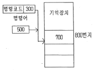
- 직접데이터 형식
- 상대주소 형식
- 간접주소 형식
- 직접주소 형식
(정답률: 55%)
23. 다음 중 스택(stack)을 필요로 하는 명령 형식은?
- 0-주소
- 1-주소
- 2-주소
- 3-주소
(정답률: 64%)
24. 다음 프로그래밍 언어 중 가장 단순하게 구성되어 처리 속도가 가장 빠른 것은?
- 기계어
- 베이직
- 포트란
- C
(정답률: 73%)
25. 반가산기의 합과 자리올림에 대한 논리식으로 옳은 것은? (단, 입력은 A와 B이고, 합은 S, 자리올림은 C 이다.)
- S=A'B ㆍ AB, C=A+B
- S=A'B+AB', C=AB
- S=A'B+AB', C=(AB)'
- S=(AB)'+AB, C=(AB)'
(정답률: 62%)
26. 마이크로프로세서에서 누산기의 용도는?
- 명령의 해독
- 명령의 저장
- 연산 결과의 일시 저장
- 다음 명령의 주소 저장
(정답률: 79%)
27. 주 기억 장치에 대한 설명이 아닌 것은?
- 최종 결과 기억
- 데이터 연산
- 중간 결과 기억
- 프로그램 기억
(정답률: 66%)
28. 다음 중 가상기억장치를 가장 올바르게 설명한 것은?
- 직접 하드웨어를 확장시켜 기억용량을 증가시킨다.
- 자기테이프 장치를 사용하여 주소공간을 확대한다.
- 보조기억장치를 사용하여 주소공간을 확대한다.
- 컴퓨터의 보안성을 확보하기 위한 차폐 시스템이다.
(정답률: 63%)
29. 다음은 무엇에 대한 설명인가?
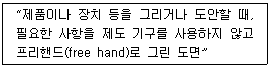
- 복사도(copy drawing)
- 스케치도(sketch drawing)
- 윈도(original drawing)
- 트레이스도(traced drawing)
(정답률: 83%)
30. 일반적인 고주파회로를 설계할 때 유의사항과 거리가 먼 것은?
- 배선의 길이는 가급적 짧게 한다.
- 배선이 꼬인 것은 코일로 간주한다.
- 회로의 중요한 요소에는 바이패스 콘덴서를 삽입한다.
- 유도 가능한 고주파 전송선은 다른 신호선과 평행되게 한다.
(정답률: 57%)
3과목: 전자제도(CAD) 이론(대략구분)
31. CAD(computer aided design)를 사용하여 얻을 수 있는 특징이 아닌 것은?
- 도면의 품질이 좋아진다.
- 도면 작성 시간이 길어진다.
- 설계 과정에서 능률이 향상된다.
- 수치 결과에 대한 정확성이 증가한다.
(정답률: 83%)
32. 인쇄회로 기판의 패턴 동박에 의한 인덕턴스 값이 0.1uH가 발생하였을 때, 주파수 10MHz에서 기판에 영향을 주는 리액턴스 값은?
- 62.8Ω
- 6.28Ω
- 0.628Ω
- 0.0628Ω
(정답률: 58%)
33. 디지털 회로도면의 제도 방법으로 틀린 것은?
- 여러 가닥의 배선이 같은 방향으로 이동할 때는 버스 선을 이용한다.
- 아날로그 부분과 전위레벨이 다르므로 도면에서 이들 회로를 격리하여 그린다.
- 아날로그 부분의 유도현상 영향을 고려하여 전원선을 함께 그린다.
- D/A 변환기 출력부에 디지털 성분 제거를 위한 저역통과 필터를 접속한다.
(정답률: 57%)
34. PCB Artwork 기법의 고려사항에 대한 설명으로 틀린 것은?
- 90°(도) 직각 배선은 가급적 피한다.
- GND 패턴은 가급적 강화하여 Noise 제거 효과를 향상시킨다.
- 비아(via)를 될 수 있으면 적게 하여 작업 공정 수를 적게 한다.
- 소신호와 대전류의 배선은 최대한 근접하도록 한다.
(정답률: 60%)
35. 다음 부품 심벌의 이름은?
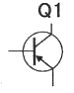
- 실리콘 제어 정류기(silicon control rectifier)
- NMOS FET(field effect transistor)
- PNP 트랜지스터(transistor)
- 트라이액(triac)
(정답률: 85%)
36. 블록선도를 그릴 때, 고려 사항으로 옳은 것은?
- 신호의 흐름은 가능하면 왼쪽에서 오른쪽으로 흐르도록 하는 것이 좋다.
- 블록의 크기는 실제 전자기기의 크기와 비례하도록 나타낸다.
- 블록은 반드시 정사각형이어야 한다.
- 블록은 대각선과 곡선을 많이 사용한다.
(정답률: 67%)
37. 전자기기의 패널(panel)은 장치의 모든 기능을 표현하는 얼굴이다. 실제 제도 시 유의사항으로 틀린 것은?
- 패널 부품은 크기를 고려하여 균형 있게 배치한다.
- 조작 상에서 서로 연관이 있는 요소끼리 근접 배치한다.
- 전원 코드는 전면에 배치한다.
- 조작 빈도가 높은 부품은 패널의 중앙이나 오른쪽에 배치한다.
(정답률: 66%)
38. 제도 규칙에서 국제 표준과 국가별 표준의 표준 기호 및 표준 명칭으로 틀린 것은?
- 미국 규격 : ANSI
- 국제 인터넷 표준화 기구 : IET
- 영국 규격 : BS
- 국제 표준화 기구 : DIN
(정답률: 77%)
39. CAD(computer aided design)란 컴퓨터의 그래픽 기능을 응용한 것인데 그래픽의 기본 기능으로 틀린 것은?
- 점의 변환
- 확대 및 축소
- 회전
- 평행 이동의 불가능
(정답률: 78%)
40. 도면작성에 대한 결과파일로 PCB프로그램이나 시뮬레이션 프로그램에서 입력 데이터로 사용되는 것은?
- 네트리스트(netlist)
- 거버파일(gerber file)
- 레이아웃 파일(layout file)
- 데이터 파일(data file)
(정답률: 55%)
41. 전자 캐드의 작업 과정 중 가장 나중에 하는 것은?
- 부품 파일
- 레이어 세팅
- 거버 파일 작성
- 네트리스트 작성
(정답률: 72%)
42. PCB 설계 시 배선으로 인한 인덕턴스 발생을 줄이기 위한 전원 라인 배선 방법으로 가장 좋은 것은?
- 전원 라인은 굵고, 짧게 배선한다.
- 전원 라인은 굵고, 길게 배선한다.
- 전원 라인은 가늘고, 길게 배선한다.
- 전원 라인은 가늘고, 짧게 배선한다.
(정답률: 76%)
43. 다음 커패스터의 형명9104 50M)에 대한 설명으로 옳은 것은?
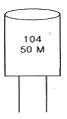
- 정전용량: 0.01㎌, 정격내압: 50V, 오차:±20%
- 정전용량: 0.1㎌, 정격내압: 50V, 오차:±20%
- 정전용량: 0.1㎌, 정격내압: 50V, 오차:±10%
- 정전용량: 0.001㎌, 정격내압: 50V, 오차:±20%
(정답률: 62%)
44. 전기 회로망에서 전압을 분배하거나 전류의 흐름을 방해하는 역할을 하는 소자는?
- 커패시터
- 수정 진동자
- 저항기
- LED
(정답률: 81%)
45. 전자캐드로 작성된 도면의 요소를 지우는 기능에 해당하는 것은?
- Zoom
- Save
- Delete
- Edit
(정답률: 86%)
46. 제품을 만드는 사람이 주문하는 사람에게 주문품의 내용에 첨부하여 제작비용을 제시하는 도면의 명칭은?
- 주문도
- 승인도
- 견적도
- 설명도
(정답률: 68%)
47. LED는 순방향 바이어스에서 통전되면서 전자-정공의 재결합으로 인하여 일부 에너지가 빛으로 방출된다. LED의 심벌로 옳은 것은?
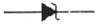
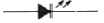
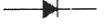
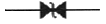
(정답률: 84%)
48. 인쇄회로기판(PCB)의 장 ㆍ 단점으로 옳은 것은?
- 소량, 다품종 생산에는 제조단가가 저렴하다.
- 오 배선이 존재하나 생산단가가 저렴하다.
- 조립, 배선, 검사의 공정 단계가 증가한다.
- 대량생산으로 생산성이 향상된다.
(정답률: 55%)
49. 캐드 시스템의 그래픽 작업 과정과 거리가 먼 것은?
- 자동 제도(automatic drafting)
- 기술적 분석(engineering analysis)
- 기하학적 모델링(geometric modeling)
- 자동 생산(automatic manufacturing)
(정답률: 63%)
50. 인쇄회로기판(PCB)의 제조공정에서 접착이 용이하도록 처리된 작업 패널 위에 드라이 필름(Photo Sensitive Dry Film Resist :감광성 사진 인쇄 막)을 일정한 온도와 압력으로 압착 도포하는 공정을 무엇이라 하는가?
- 스크러빙(Scrubbing : 정면)
- 노광(Exposure)
- 라미네이션(Lamination)
- 부식(Etching)
(정답률: 65%)
51. 능동소자 중 이미터(E), 베이스(B), 컬렉터(C)의 3개의 전극으로 구성되어 있으며, 전류 제어용 등에 사용되는 소자는?
- 다이오드
- 트랜지스터
- 변압기
- FET
(정답률: 76%)
52. 물체의 실제 길이와 도면에서 축소 또는 확대하여 그리는 길이의 비율을 척도라 한다. 다음 중 비례 관계가 아님을 뜻하며, 도면과 실물의 치수가 비례하지 않을 때 사용하는 것은?
- 배척
- NS
- 현척
- 축척
(정답률: 72%)
53. 도면에 마련하는 양식 중 반드시 그려야 할 사항으로 짝지어진 것은?
- 윤곽선, 중심 마크, 표제란
- 표제란, 부품란, 재단 마크
- 윤곽선, 비교 눈금, 재단 마크
- 표제란, 중심 마크, 재단 마크
(정답률: 61%)
54. 도면의 효율적 관리를 위해 마이크로필름을 이용하는 이유가 아닌 것은?
- 종이에 비해 보존성이 좋다.
- 재료비를 절감시킬 수 이다.
- 통일된 크기로 복사 할 수 있다.
- 복사 시간이 짧지만 복원력이 낮다.
(정답률: 74%)
55. 다음 중 EX-OR 게이트의 기호로 옳은 것은?
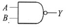
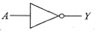
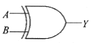
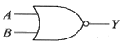
(정답률: 84%)
56. 5색 저항으로 값과 오차가 바르게 된 것은?
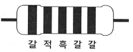
- 120Ω ± 0.5%
- 1.2㏀ ± 1%
- 12Ω ± 0.5%
- 12㏀ ± 1%
(정답률: 61%)
57. 표준화된 설계 작업(design rule)을 위해 규정화된 설계 기준에 해당하지 않는 것은?
- 배선도의 폭
- 비아홀(via hole)의 크기
- 솔더레지스트(solder resist)의 치수
- 캐드 프로그램(CAD program)의 버전
(정답률: 65%)
58. 다음 그림에서 도면의 축소나 확대, 복사작업과 이들의 복사도면의 취급 편의를 위한 것은?
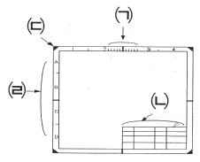
- (ㄱ)
- (ㄴ)
- (ㄷ)
- (ㄹ)
(정답률: 68%)
59. 다음 기호는 어느 전자 부품의 기호인가?
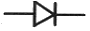
- 저항
- FET
- 다이오드
- 트랜지스터
(정답률: 84%)
60. 직렬포트에 대한 설명으로 틀린 것은?
- 주로 모뎀 접속에 사용된다.
- EIA에서 정한 RS-232C 규격에 따라 36핀 커넥터로 되어 있다.
- 전송거리는 규격상 15m 이내로 제한된다.
- 주변장치와 2진 직렬 데이터 통신을 행하기 위한 인터페이스이다.
(정답률: 58%)
설명: RC 발진 회로는 단순한 구조로 구성되어 있어 제작 및 설계가 비교적 쉽고, 부품 비용이 저렴하기 때문에 가격이 저렴하다. 반면에 LC 발진 회로나 수정 발진 회로는 부품이 복잡하고 제작 및 설계가 어렵기 때문에 비용이 높다. 세라믹 발진 회로는 저주파 측정용 발진기 용도로 쓰이기 때문에 다른 발진 회로와는 비교할 수 없는 용도로 사용된다.